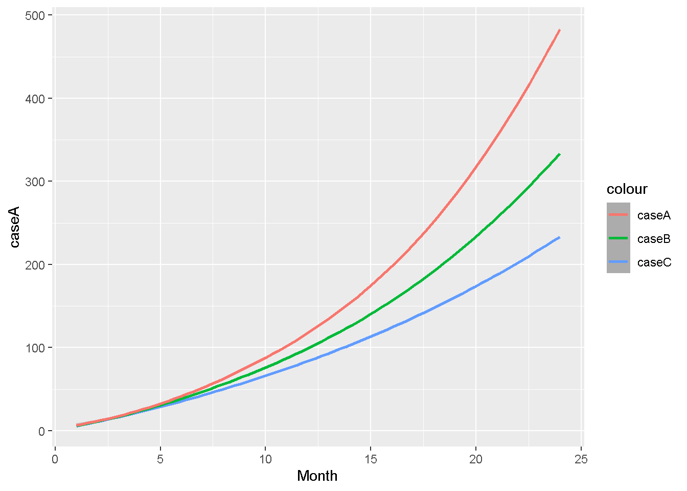

分析フロー
環境
version## _
## platform x86_64-w64-mingw32
## arch x86_64
## os mingw32
## system x86_64, mingw32
## status
## major 4
## minor 0.3
## year 2020
## month 10
## day 10
## svn rev 79318
## language R
## version.string R version 4.0.3 (2020-10-10)
## nickname Bunny-Wunnies Freak Outパッケージの準備
Packages <- c("tidyverse", "ggplot2", "DT", "scales")
lapply(Packages, library, character.only = TRUE)## -- Attaching packages --------------------------------------- tidyverse 1.3.0 --## √ ggplot2 3.3.3 √ purrr 0.3.4
## √ tibble 3.0.4 √ dplyr 1.0.2
## √ tidyr 1.1.2 √ stringr 1.4.0
## √ readr 1.4.0 √ forcats 0.5.0## -- Conflicts ------------------------------------------ tidyverse_conflicts() --
## x dplyr::filter() masks stats::filter()
## x dplyr::lag() masks stats::lag()##
## 次のパッケージを付け加えます: 'scales'## 以下のオブジェクトは 'package:purrr' からマスクされています:
##
## discard## 以下のオブジェクトは 'package:readr' からマスクされています:
##
## col_factor前提条件
- interest rateは、期末に支払われる。
- 途中で貯蓄を引き出すことはできない。
- 金利と毎月の貯金額は一定。
- 金利は複利で、年利５％で、毎月組み込まれる式。
- 毎月の貯金額は、5万円。
- 運用期間は、2年間（24か月）
まず、最初は単純化した条件で計算してみます。
変数の準備
m <- 1:24 # 1か月目から、24か月目の期末まで
ms <- rep(5, length(m)) # 毎月5万円の積み立て
r <- rep(0.05, length(m)) # 5%の利子率（固定）
ms_r <- ms * (1 + r) # 毎月の積立金額 * 利子率
cum_ms <- cumsum(ms) # 金利なしver.の貯金額を知りたい
cum_ms_r_moment <- (5 * (1.05) - (5 * 1.05 ^ (1:24 + 1))) / (1 - 1.05) # その時の運用額累計を表示したい
percent <- cum_ms_r_moment / cum_ms # 金利ありｖｓ金利なしを比較したい
n <- 24:1 # 貯金開始１か月目の貯金額に対しては24回金利のcompoundがある
r2 <- (1 + r / 12) ^ sort(length(n):1, decreasing = TRUE) # 2年後の視点から見て、毎月の金利が結果いくらになるのか知りたい
ms_r2 <- ms * r2 # 毎月の積立金額 * 利子率
cum_ms_r2_future <- cumsum(ms_r2) # 24か月目の項目以外は無視データフレーム化
plan <- data.frame(m, ms, r, ms_r, cum_ms, cum_ms_r_moment, percent,
n, r2, ms_r2, cum_ms_r2_future) %>% round(digits = 2)
datatable(plan)グラフ表示
ggplot(plan, aes(x = m)) +
geom_smooth(aes(y = cum_ms, color= "毎月貯金(金利なし）")) +
geom_smooth(aes(y = cum_ms_r_moment, color = "毎月運用(金利あり）")) +
scale_y_continuous(labels = comma) +
scale_x_continuous(breaks = seq(0, 24, by = 3)) +
xlab("運用経過累積月（ヶ月）") +
ylab("運用金額 （万円）")## `geom_smooth()` using method = 'loess' and formula 'y ~ x'
## `geom_smooth()` using method = 'loess' and formula 'y ~ x'
データフレームを自動で作れる関数を作る
saving_plan <- function(Month, Save, R) {
m <- 1:Month # 一か月目から、24か月目の期末まで
ms <- rep(Save, length(m))
r <- rep(R, length(m))
ms_r <- ms * (1 + r)
cum_ms <- cumsum(ms) # 金利なしver.の貯金額を知りたい
cum_ms_r_moment <- (Save * (1 + R) - (Save * (1 + R) ^ (m + 1))) / (1 - (1 + R)) # その時の運用額累計を表示したい
percent <- cum_ms_r_moment / cum_ms # 金利ありｖｓ金利なしを比較したい
n <- Month:1 # 貯金開始１か月目の貯金額に対しては24回金利のcompoundがある
r2 <- (1 + r / 12) ^ seq(length(n):1) # 2年後の視点から見て、毎月の金利が結果いくらになるのか知りたい
cum_ms_r_future <- cumsum(ms_r2) # 24か月目の項目以外は無視
plan <- data.frame(m, ms, r, ms_r, cum_ms, cum_ms_r_moment, percent,
n, r2, cum_ms_r_future)
}試しに変数を入れてみる
df <- saving_plan(24, 5, 0.05) %>% round(digits = 2)
datatable(df)複数のプランを比べる
### 複数のプランをつくる。
A <- saving_plan(24, 5, 0.05)
B <- saving_plan(24, 5, 0.075)
C <- saving_plan(24, 5, 0.1)
### 複数のプランを作る際に必要な項目に絞る
plans <- data.frame(A[1],A[6],B[6], C[6]) %>% as_tibble()
plans2 <- plans %>%
select(
Month = m,
caseA = cum_ms_r_moment,
caseB = cum_ms_r_moment.1,
caseC = cum_ms_r_moment.2
) %>%
round(digits = 2)
datatable(plans2)グラフ化する
ggplot(plans2, aes(x = Month)) +
geom_smooth(aes(y = caseA, color = "caseC")) +
geom_smooth(aes(y = caseB, color = "caseB")) +
geom_smooth(aes(y = caseC, color = "caseA")) ## `geom_smooth()` using method = 'loess' and formula 'y ~ x'
## `geom_smooth()` using method = 'loess' and formula 'y ~ x'
## `geom_smooth()` using method = 'loess' and formula 'y ~ x'